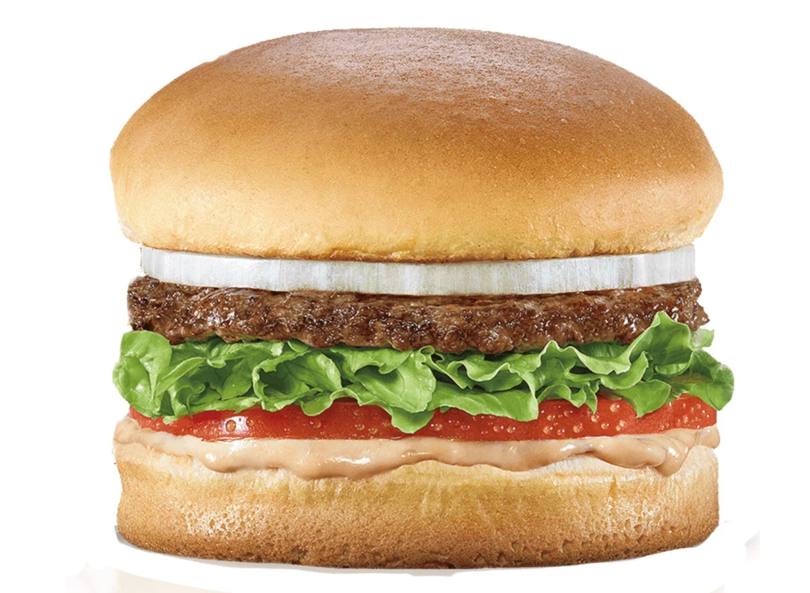

Hamburger Recipe
Today we will learn how to make hamburgers using a simple and quick recipe.
Hamburgers are a staple of any outdoor party, so if you bring these to your next
cookout, you will surely get the attention of other party members.
Hamburgers are known to be an all American cusine. This dish paired with some fries
or whatever side you prefer will keep you and your family happy. The recipe shown below
is cost friendly and takes no time at all to follow. Don't worry if you are not a wizard
in the kithcen. After following a couple of simple steps, this dish will make you seem
like a pro!
List of Ingridents
- 4 oz of 93/7% ground beef
- 1 brioche bun
- 1 oz of iceberg lettuce
- 2 slices of tomato
- condiment of your choosing
- OPTIONAL:pickle slices
- OPTIONAL:cheese of your choice
Steps
- Season the ground beef with spices of your choosing
- Form the ground beef into a ball, then slightly flatten it to make a patty shape
- Cook the ground beef while flipping once, everyone 2 minutes until medium rare
- OPTIONAL:Once cooked, place your slice of cheese on top of the hamburger
meat to rest until melted.
- Toast your brioche bun to how you like it
- Once the brioche bun is toasted, assemble your burger, starting with the patty, followed
by your toppings
Home Page